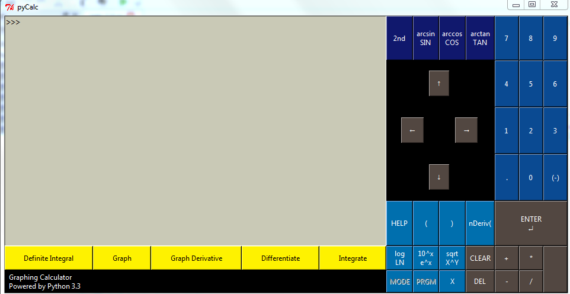

PyCalc is your graphing calculator solution for a number of applications, including:
With this in mind, the PyCalc team developed a graphing calculator with a simple, easy-to-use GUI with both mouse and keyboard functionality. It utilizes functions not included in the TI-83, TI-84, HP-50 series of mainstream graphing calculators, such as the derivative and definite integral functions. Its highlighted sections of functions(displayed below) makes it easy for a kindergartener to know what buttons to push, while a college students can use it to do more advanced functions.
